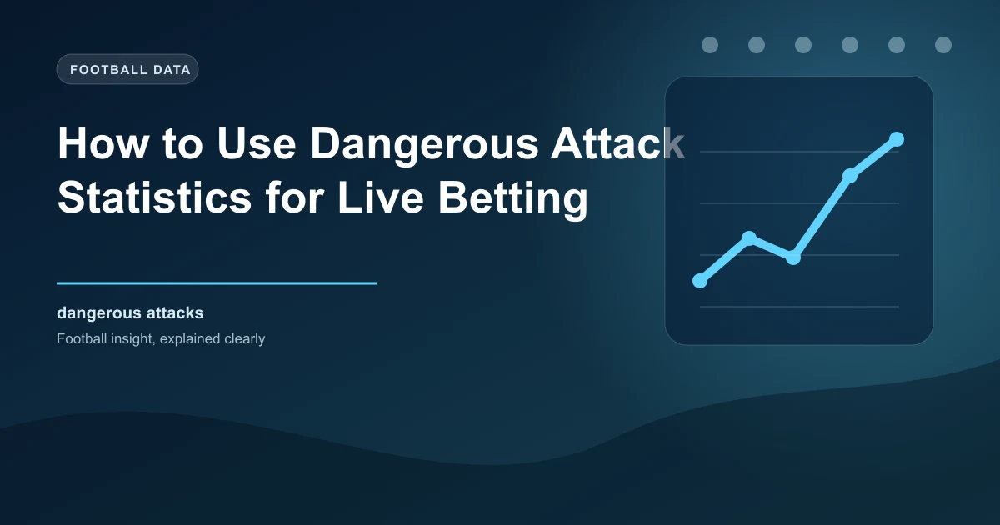

Live football betting has revolutionized how bettors engage with the beautiful game. Instead of placing all your bets before kickoff, in-play betting allows you to react to what is happening on the pitch in real time. Among the many statistics available during live matches, dangerous attack data stands out as one of the most valuable yet underutilised tools in a bettor's arsenal.
Understanding dangerous attack statistics and how they correlate with goals, momentum, and match outcomes can give you a significant edge over bettors who rely solely on the scoreline. In this guide, we will explain what dangerous attacks measure, how to interpret them during live matches, and how to build practical betting strategies around this powerful metric.
Dangerous attacks represent one of the most intuitive in-play statistics in football. A dangerous attack is recorded when a team enters the opposition's final third or penalty area with the ball in a threatening position. Unlike total shots or possession percentage, dangerous attacks specifically measure how frequently a team is getting into positions where goals are likely to be scored.
The key distinction between dangerous attacks and other attacking metrics is specificity. Possession tells you who has the ball, but not what they are doing with it. Total shots count every effort including speculative long-range efforts. Dangerous attacks, however, only register when a team has genuinely progressed the ball into a high-threat zone. This makes them a much more accurate indicator of which team is actually creating pressure.
When watching a live match and monitoring dangerous attack statistics, the raw numbers themselves are less important than the trends and ratios. Here is how to read the data effectively:
The dangerous attack ratio between the two teams is your first indicator. If one team has 12 dangerous attacks and the other has 4, that is a 3:1 ratio in favour of the dominant team. Historical data suggests that when one team achieves a 3:1 or greater dangerous attack ratio, they score in the match approximately 70-75% of the time. This is a significantly higher correlation than possession dominance, which only correlates with scoring around 55-60% of the time.
The trajectory of dangerous attacks over time is equally important. A team that starts with 2 dangerous attacks in the first 15 minutes but then registers 8 in the next 15 minutes is building significant momentum. This acceleration in attacking pressure often precedes a goal, making it a valuable signal for in-play over goals bets.
Conversely, a team whose dangerous attack count plateaus or declines after a strong start may be tiring or losing tactical control. If you notice a team's dangerous attack rate dropping while the opponent's is rising, this could signal an upcoming shift in the match dynamics that the odds have not yet reflected.
The statistical relationship between dangerous attacks and goals is well-documented across multiple leagues and seasons. Research shows that teams who generate significantly more dangerous attacks than their opponents win approximately 65-70% of matches. This win rate is higher than the correlation for possession (55%), shots (60%), or corners (50%).
More importantly for live bettors, the relationship between dangerous attacks and next-goal markets is particularly strong. When one team has a dangerous attack ratio of 2:1 or better, they are roughly twice as likely to score the next goal compared to the trailing team. This creates clear opportunities in the next goal and time of next goal markets.
However, it is crucial to understand that dangerous attacks are a leading indicator, not a guarantee. A team can generate 20 dangerous attacks without scoring if the opposition goalkeeper is having an outstanding game or if the final ball is consistently poor. The metric measures the process of creating chances, not the outcome of those chances.
Dangerous attacks become most powerful when combined with other live statistics rather than used in isolation. Here are the most effective combinations:
Dangerous Attacks + xG (Expected Goals): Some live data providers now offer real-time xG estimates. When a team has both a high dangerous attack count and a high xG, they are creating high-quality chances consistently. This combination is one of the strongest indicators of an imminent goal.
Dangerous Attacks + Momentum: Momentum in football is real and measurable. When a team's dangerous attacks are increasing period over period while their opponent's are decreasing, the momentum indicator strongly favours the ascending team. Backing the team with momentum in the next goal market has shown positive returns historically.
Dangerous Attacks + Cards: When a team is under sustained dangerous attack pressure, their defenders commit more fouls and receive more cards. If you see one team dominating dangerous attacks and the opponent accumulating yellow cards, the over cards market becomes attractive, as the defensive pressure will likely produce further infringements.
Dangerous Attacks + Corner Kicks: Dangerous attacks often generate corner kicks as defenders clear the ball from threatening positions. A team with high dangerous attacks will typically also win more corners, making the over corners market a natural companion bet.
Before placing any live bet, check these four indicators:
When three or more indicators align, the betting opportunity is stronger.
Here are five actionable strategies you can implement immediately using dangerous attack statistics:
Dangerous attack statistics are available on most major live score and statistics platforms. Websites like Flashscore, SofaScore, and FotMob display dangerous attack counts prominently during live matches. Many betting apps also integrate these statistics directly into their live betting interfaces, allowing you to monitor the data without switching between platforms.
For more detailed analysis, platforms like WhoScored and FBref provide post-match dangerous attack data that you can use to build historical models. By tracking dangerous attack patterns over hundreds of matches, you can identify league-specific trends and team-specific tendencies that inform your live betting strategy.
No single statistic is perfect, and dangerous attacks have specific limitations that bettors must acknowledge. First, dangerous attacks do not account for the quality of the chance created. A cross that reaches an unmarked striker and a half-chance at the edge of the area both count as dangerous attacks, despite being vastly different in their goal probability.
Second, dangerous attacks are influenced by team style. Possession-based teams naturally generate more dangerous attacks simply because they spend more time in the opposition half. Counter-attacking teams may generate fewer dangerous attacks but score more goals from the chances they do create. Comparing dangerous attack numbers between teams with different styles can be misleading.
Third, dangerous attack data can lag behind the actual match events by a few seconds during live play. In the fast-moving world of in-play betting, a delay of even 10-15 seconds can mean the difference between getting valuable odds and missing the window entirely.
Get real-time football predictions and data-driven analysis with WinFulltime.
View Today's Predictions Win
Win